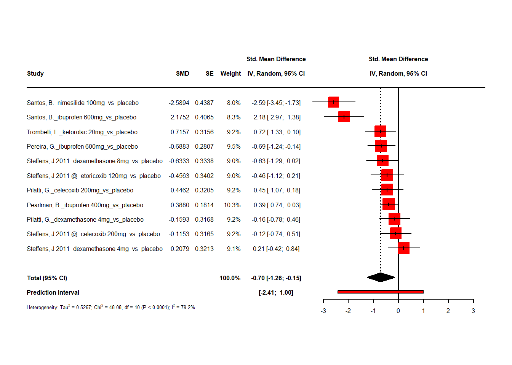
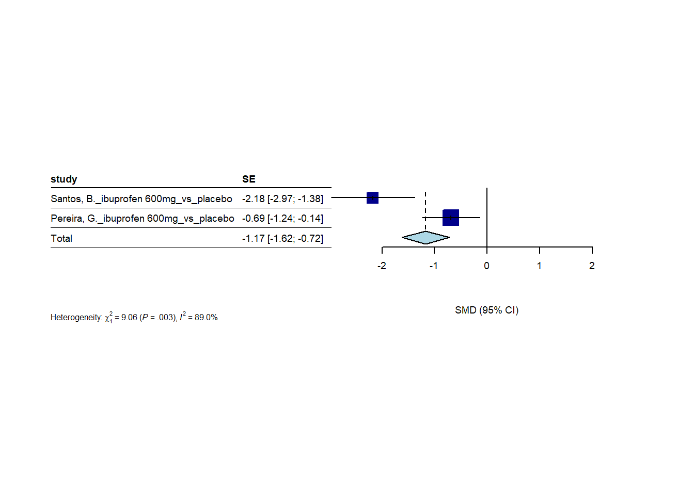
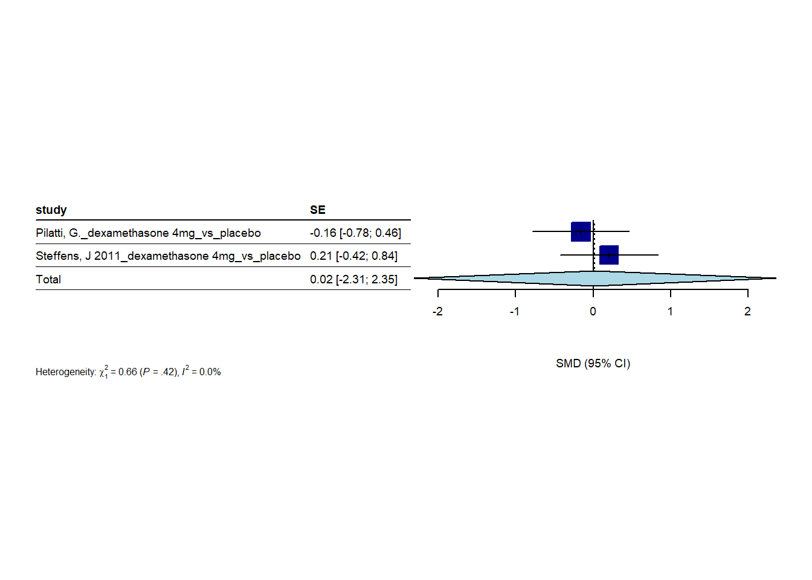
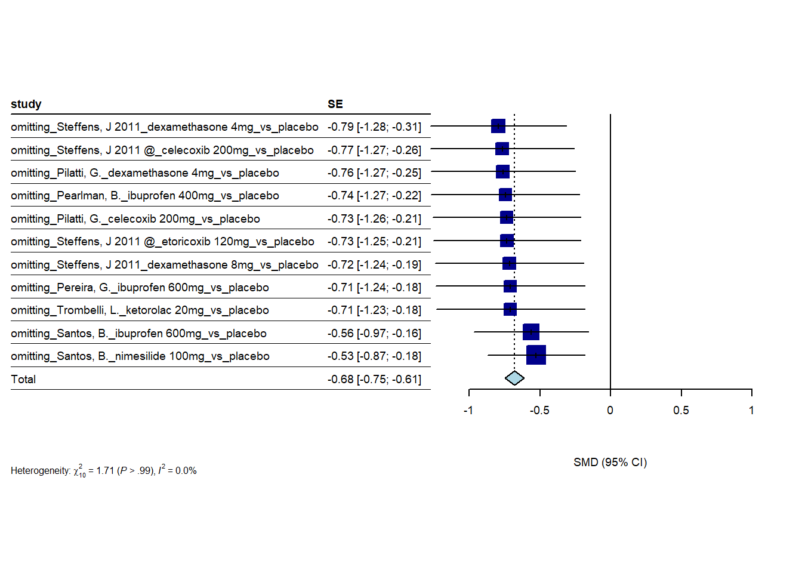
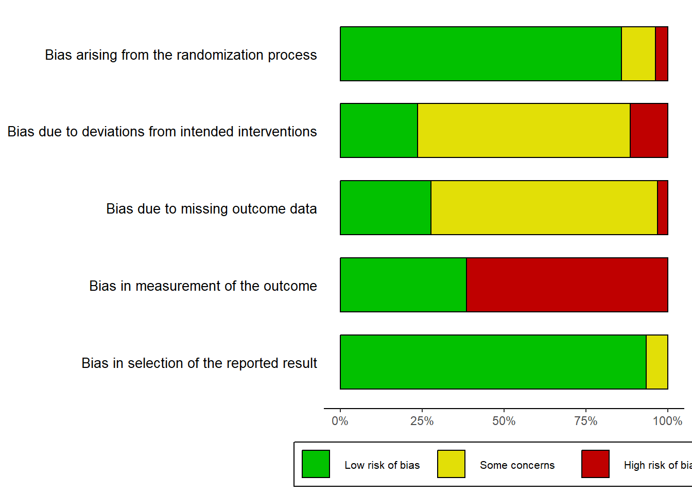

one hour
2024-05-24
Last updated: 2025-02-07
Checks: 5 2
Knit directory: Collaborations/
This reproducible R Markdown analysis was created with workflowr (version 1.7.1). The Checks tab describes the reproducibility checks that were applied when the results were created. The Past versions tab lists the development history.
The R Markdown file has unstaged changes. To know which version of
the R Markdown file created these results, you’ll want to first commit
it to the Git repo. If you’re still working on the analysis, you can
ignore this warning. When you’re finished, you can run
wflow_publish to commit the R Markdown file and build the
HTML.
Great job! The global environment was empty. Objects defined in the global environment can affect the analysis in your R Markdown file in unknown ways. For reproduciblity it’s best to always run the code in an empty environment.
The command set.seed(20210523) was run prior to running
the code in the R Markdown file. Setting a seed ensures that any results
that rely on randomness, e.g. subsampling or permutations, are
reproducible.
Great job! Recording the operating system, R version, and package versions is critical for reproducibility.
Nice! There were no cached chunks for this analysis, so you can be confident that you successfully produced the results during this run.
Using absolute paths to the files within your workflowr project makes it difficult for you and others to run your code on a different machine. Change the absolute path(s) below to the suggested relative path(s) to make your code more reproducible.
| absolute | relative |
|---|---|
| C:/Shengtong/Research/AllCollaboration/Collaborations/analysis/Rfunctions.R | analysis/Rfunctions.R |
Great! You are using Git for version control. Tracking code development and connecting the code version to the results is critical for reproducibility.
The results in this page were generated with repository version ea3228d. See the Past versions tab to see a history of the changes made to the R Markdown and HTML files.
Note that you need to be careful to ensure that all relevant files for
the analysis have been committed to Git prior to generating the results
(you can use wflow_publish or
wflow_git_commit). workflowr only checks the R Markdown
file, but you know if there are other scripts or data files that it
depends on. Below is the status of the Git repository when the results
were generated:
Ignored files:
Ignored: .Rhistory
Ignored: analysis/.Rhistory
Ignored: analysis/2022_Mar2_Marinho_cache/
Unstaged changes:
Modified: analysis/2023_0301_Christos_1hour.Rmd
Note that any generated files, e.g. HTML, png, CSS, etc., are not included in this status report because it is ok for generated content to have uncommitted changes.
These are the previous versions of the repository in which changes were
made to the R Markdown
(analysis/2023_0301_Christos_1hour.Rmd) and HTML
(docs/2023_0301_Christos_1hour.html) files. If you’ve
configured a remote Git repository (see ?wflow_git_remote),
click on the hyperlinks in the table below to view the files as they
were in that past version.
| File | Version | Author | Date | Message |
|---|---|---|---|---|
| Rmd | ea3228d | han | 2025-02-07 | 2/7/2025 |
| html | ea3228d | han | 2025-02-07 | 2/7/2025 |
| Rmd | d74da72 | han | 2025-02-07 | 2/7/2025 |
| html | d74da72 | han | 2025-02-07 | 2/7/2025 |
| Rmd | f0fe5e6 | han | 2025-01-27 | 1/27/2025 |
| html | f0fe5e6 | han | 2025-01-27 | 1/27/2025 |
| Rmd | a61dab8 | han | 2025-01-27 | 1/27/2025 |
| html | a61dab8 | han | 2025-01-27 | 1/27/2025 |
| Rmd | 3ca531f | han | 2024-12-06 | 12/6/2024 |
| html | 3ca531f | han | 2024-12-06 | 12/6/2024 |
| Rmd | 88f8895 | han | 2024-10-21 | 10/21/2024 |
| html | 88f8895 | han | 2024-10-21 | 10/21/2024 |
| Rmd | 716177e | han | 2024-10-21 | 10/21/2024 |
| html | 716177e | han | 2024-10-21 | 10/21/2024 |
| Rmd | 032bf3d | han | 2024-10-18 | 10/18/2024 |
| html | 032bf3d | han | 2024-10-18 | 10/18/2024 |
| Rmd | 5e06614 | han | 2024-10-16 | 10/16/2024 |
| html | 5e06614 | han | 2024-10-16 | 10/16/2024 |
| Rmd | e90324b | han | 2024-10-16 | 10/16/2024 |
| html | e90324b | han | 2024-10-16 | 10/16/2024 |
| Rmd | e32c019 | han | 2024-10-14 | 10/14/2024 |
| html | e32c019 | han | 2024-10-14 | 10/14/2024 |
| Rmd | 3956566 | han | 2024-10-14 | 10/14/2024 |
| html | 3956566 | han | 2024-10-14 | 10/14/2024 |
| Rmd | 58e856a | han | 2024-10-14 | 10/14/2024 |
| html | 58e856a | han | 2024-10-14 | 10/14/2024 |
| Rmd | 83416e2 | han | 2024-10-04 | 10/4/2024 |
| html | 83416e2 | han | 2024-10-04 | 10/4/2024 |
| Rmd | 28d7bd7 | han | 2024-10-04 | 10/4/2024 |
| html | 28d7bd7 | han | 2024-10-04 | 10/4/2024 |
| Rmd | ceb5af0 | han | 2024-10-03 | 10/3/2024 |
| html | ceb5af0 | han | 2024-10-03 | 10/3/2024 |
| html | 4213e4f | han | 2024-10-02 | 10/2/2024 |
| Rmd | ae52b93 | han | 2024-09-11 | 9/11/2024 |
| html | d916798 | han | 2024-09-11 | 9/11/2024 |
| Rmd | f89c990 | han | 2024-09-11 | 9/11/2024 |
| html | f89c990 | han | 2024-09-11 | 9/11/2024 |
| Rmd | fe99139 | han | 2024-09-10 | 9/10/2024 |
| html | fe99139 | han | 2024-09-10 | 9/10/2024 |
| Rmd | 1754ebd | han | 2024-09-10 | 9/10/2024 |
| html | 1754ebd | han | 2024-09-10 | 9/10/2024 |
| Rmd | 60a196e | han | 2024-09-03 | 9/3/2024 |
| Rmd | 7a0fd0f | han | 2024-08-29 | 8/29/2024 |
| html | 7a0fd0f | han | 2024-08-29 | 8/29/2024 |
| Rmd | 7d82242 | han | 2024-06-19 | 6/19/2024 |
| html | 7d82242 | han | 2024-06-19 | 6/19/2024 |
| Rmd | 02963ce | han | 2024-06-18 | 6/18/2024 |
| html | 02963ce | han | 2024-06-18 | 6/18/2024 |
| Rmd | ab2050b | han | 2024-06-05 | 6/5/2024 |
| html | ab2050b | han | 2024-06-05 | 6/5/2024 |
| Rmd | ba6d4d5 | han | 2024-05-31 | 5/31/2024 |
| html | ba6d4d5 | han | 2024-05-31 | 5/31/2024 |
| Rmd | df47937 | han | 2024-05-30 | 5/30/2024 |
| html | df47937 | han | 2024-05-30 | 5/30/2024 |
| Rmd | 92d73bb | han | 2024-05-29 | 5/29/2024 |
| html | 92d73bb | han | 2024-05-29 | 5/29/2024 |
| Rmd | 2f814fa | han | 2024-05-29 | 5/29/2024 |
| html | 2f814fa | han | 2024-05-29 | 5/29/2024 |
| Rmd | d32b3b6 | han | 2024-05-24 | 5/24/2024 |
| html | d32b3b6 | han | 2024-05-24 | 5/24/2024 |
Home
sample data
data_1hour=data$`1 Hour`[-1,c(1,3,8, 5,7)]
data_1hour_full=as_tibble(data_1hour[complete.cases(data_1hour), ])
colnames(data_1hour_full)=c("study", "treatment", "n", "mean", "sd")
data_1hour_full%>%
datatable(extensions = 'Buttons',
caption = "one hour",
options = list(dom = 'Blfrtip',
buttons = c('copy', 'csv', 'excel', 'pdf', 'print'),
lengthMenu = list(c(10,25,50,-1),
c(10,25,50,"All"))))forest plots
ALL studies per author – no groups
- random effect model
##### https://bookdown.org/MathiasHarrer/Doing_Meta_Analysis_in_R/forest.html
#data(Fleiss1993cont)
#m1 <- metacont(n.psyc, mean.psyc, sd.psyc, n.cont, mean.cont, sd.cont,
# data = Fleiss1993cont, sm = "SMD")
#m1
#forest(m1)
######## manually create the data matrix
study_data=matrix(nrow=11, ncol=6)
study_data[1,]=c(as.numeric(data_1hour_full[1,3:5]), as.numeric(data_1hour_full[2,3:5]))
study_data[2,]=c(as.numeric(data_1hour_full[3,3:5]), as.numeric(data_1hour_full[4,3:5]))
study_data[3,]=c(as.numeric(data_1hour_full[6,3:5]), as.numeric(data_1hour_full[5,3:5]))
study_data[4,]=c(as.numeric(data_1hour_full[7,3:5]), as.numeric(data_1hour_full[5,3:5]))
study_data[5,]=c(as.numeric(data_1hour_full[8,3:5]), as.numeric(data_1hour_full[9,3:5]))
study_data[6,]=c(as.numeric(data_1hour_full[10,3:5]), as.numeric(data_1hour_full[11,3:5]))
study_data[7,]=c(as.numeric(data_1hour_full[12,3:5]), as.numeric(data_1hour_full[14,3:5]))
study_data[8,]=c(as.numeric(data_1hour_full[13,3:5]), as.numeric(data_1hour_full[14,3:5]))
study_data[9,]=c(as.numeric(data_1hour_full[15,3:5]), as.numeric(data_1hour_full[17,3:5]))
study_data[10,]=c(as.numeric(data_1hour_full[16,3:5]), as.numeric(data_1hour_full[17,3:5]))
study_data[11,]=c(as.numeric(data_1hour_full[18,3:5]), as.numeric(data_1hour_full[19,3:5]))
#study_data[12,]=c(as.numeric(data_1hour_full[6,3:5]), as.numeric(data_1hour_full[7,3:5]))
#study_data[13,]=c(as.numeric(data_1hour_full[8,3:5]), as.numeric(data_1hour_full[10,3:5]))
#study_data[14,]=c(as.numeric(data_1hour_full[12,3:5]), as.numeric(data_1hour_full[13,3:5]))
#study_data[15,]=c(as.numeric(data_1hour_full[15,3:5]), as.numeric(data_1hour_full[16,3:5]))
comparison=c("Pearlman, B._ibuprofen 400mg_vs_placebo",
"Pereira, G._ibuprofen 600mg_vs_placebo",
"Pilatti, G._dexamethasone 4mg_vs_placebo",
"Pilatti, G._celecoxib 200mg_vs_placebo",
"Santos, B._ibuprofen 600mg_vs_placebo",
"Santos, B._nimesilide 100mg_vs_placebo",
"Steffens, J 2011_dexamethasone 4mg_vs_placebo",
"Steffens, J 2011_dexamethasone 8mg_vs_placebo",
"Steffens, J 2011 @_celecoxib 200mg_vs_placebo",
"Steffens, J 2011 @_etoricoxib 120mg_vs_placebo",
"Trombelli, L._ketorolac 20mg_vs_placebo"
# "Pilatti, G._dexamethasone 4mg_vs_celecoxib 200mg",
# "Santos, B._ibuprofen 600mg_vs_nimesilide 100mg",
# "Steffens, J 2011_dexamethasone 4mg_vs_dexamethasone 8mg",
# "Steffens, J 2011 @_celecoxib 200mg_vs_etoricoxib 120mg"
)
data_meta=data.frame(comparison=comparison, samplesize_exp=study_data[,1], mean_exp=study_data[,2], sd_exp=study_data[,3], samplesize_contr=study_data[,4], mean_contr=study_data[,5], sd_contr=study_data[,6] )
colnames(study_data)=c("samplesize_exp", "mean_exp", "sd_exp", "samplesize_contr", "mean_contr", "sd_contr")
rownames(study_data)=comparison
data_meta=data.frame(study_data)
m1 <- metacont(samplesize_exp, mean_exp, sd_exp, samplesize_contr, mean_contr, sd_contr,
data = data_meta[1:11,], sm = "SMD")
########### generate object for plot
m.gen <- metagen(TE = m1$TE,
seTE =m1$seTE,
studlab = comparison[1:11],
data = data_meta[1:11,],
sm = "SMD",
fixed = FALSE,
random = TRUE,
method.tau = "REML",
hakn = TRUE,
title = "Different treatments")
#summary(m.gen)
m.gen_weighted <- metagen(TE = m1$TE,
seTE =m1$seTE,
studlab = comparison[1:11],
data = data_meta[1:11,],
sm = "WMD",
fixed = FALSE,
random = TRUE,
method.tau = "REML",
hakn = TRUE,
title = "Different treatments")
both SMD and WMD produce same results
because \(confidence~interval=mean+/-1.96 \times\frac{SD}{\sqrt{sample~size}}\), so \(SD=\sqrt{sample~size} \times(CI~upper~limit-CI~lower~limit)/3.92\), then the raw mean difference could be calculated as
\[Total \times SD=Total \times \sqrt{sample~size} \times(CI~upper~limit-CI~lower~limit)/3.92 \] In above example, the raw mean difference is \(-0.7\times \sqrt{11} \times (-0.15+1.26)/3.92=-0.657\).
- Random effect model, effects of individual studies do not only deviate due to sampling error alone but that there is another source of variance,
\[\widehat{\theta}_k=\underbrace{\mu+\zeta_k}_{\theta_k}+\epsilon_k\]
\(\mu\) is the true pooled effect size; \(\theta_k\) is the true effect size of study k. here is the relationships among them. \(\zeta_k\) is a product of chance alone.
- We use R package-meta to calculate standardised mean difference
(SMD) and 95% confidence interval (CI) in every study between each
treatment and placebo, reported in the Table on the left and visualized
on the right. Pooled effect was calculated as
Totalin the last row. Heterogeneity measure was presented under the table.
# https://bookdown.org/MathiasHarrer/Doing_Meta_Analysis_in_R/pub-bias.html
# Define fill colors for contour
col.contour = c("gray75", "pink", "red")
# Generate funnel plot (we do not include study labels here)
meta::funnel(m.gen,
#xlim = c(-0.5, 2),
contour = c(0.9, 0.95, 0.99),
col.contour = col.contour)
# Add a legend
legend(x = -2.5, y = 0.1,
legend = c("p < 0.1", "p < 0.05", "p < 0.01"),
fill = col.contour)
# Add a title
title("Contour-Enhanced Funnel Plot")
| Version | Author | Date |
|---|---|---|
| d74da72 | han | 2025-02-07 |
When there is no publication bias, the data points in such a plot should form a roughly symmetrical, upside-down funnel. Studies in the top part of the plot (those with low standard errors), should lie closely together, and not far away from the pooled effect size. In the lower part of the plot, with increasing standard errors, the funnel “opens up”, and effect sizes are expected to scatter more heavily to the left and right of the pooled effect.
The vertical line in the middle of the funnel shows the average effect size
overall it is not symmetric
significant studies are in interested areas with \(p<0.05\), and \(p<0.01\).
parallel RCTs
variable_include_index=c(2,11, 8, 10, 1, 9, 7)
m22 <- metacont(samplesize_exp, mean_exp, sd_exp, samplesize_contr, mean_contr, sd_contr,
data = data_meta[variable_include_index,], sm = "SMD")
########### generate object for plot
m.gen22 <- metagen(TE = m22$TE,
seTE =m22$seTE,
studlab = comparison[variable_include_index],
data = data_meta[variable_include_index,],
sm = "SMD",
fixed = T,
random = F,
method.tau = "REML",
hakn = TRUE,
title = "Different treatments")
#summary(m.gen)
forest(m.gen22, layout="RevMan5", sortvar = TE,
prediction = F,
print.tau2 = FALSE,
fontsize=6.5,
leftlabs = c("study", "SE", "g")) # sortvar = TE: sort studies by effect size 
1 hour - Studies per surgery
random effect model
##################### forest plot without Pereira
variable_include_index=c(1,3:11)
m2 <- metacont(samplesize_exp, mean_exp, sd_exp, samplesize_contr, mean_contr, sd_contr,
data = data_meta[variable_include_index,], sm = "SMD")
########### generate object for plot
m.gen2 <- metagen(TE = m2$TE,
seTE =m2$seTE,
studlab = comparison[variable_include_index],
data = data_meta[variable_include_index,],
sm = "SMD",
fixed = FALSE,
random = TRUE,
method.tau = "REML",
hakn = TRUE,
title = "Different treatments")
#summary(m.gen)
forest(m.gen2, layout="RevMan5", sortvar = TE,
prediction = T,
print.tau2 = FALSE,
fontsize=6.5,
leftlabs = c("study", "SE", "g")) # sortvar = TE: sort studies by effect size 
- raw difference -0.72
> -0.71*(10)^0.5*(-0.08+1.34)/3.92 [1] -0.7216769
1 hour - Studies per timing of preemptive medication administration
Preemptive medication given 1 hour prior to surgery or longer
- random effect model
#####################
variable_include_index=c(2,3,4,5,6,7,8,9,10)
m3 <- metacont(samplesize_exp, mean_exp, sd_exp, samplesize_contr, mean_contr, sd_contr,
data = data_meta[variable_include_index,], sm = "SMD")
########### generate object for plot
m.gen3 <- metagen(TE = m3$TE,
seTE =m3$seTE,
studlab = comparison[variable_include_index],
data = data_meta[variable_include_index,],
sm = "SMD",
fixed = FALSE,
random = TRUE,
method.tau = "REML",
hakn = TRUE,
title = "Different treatments")
#summary(m.gen)
forest(m.gen3, layout="RevMan5", sortvar = TE,
prediction = T,
print.tau2 = FALSE,
fontsize=6.5,
leftlabs = c("study", "SE", "g")) # sortvar = TE: sort studies by effect size 
- raw difference -0.82
> -0.75*(9)^0.5*(-0.04+1.47)/3.92 [1] -0.8207908
Preemptive medication given less than 1 hour prior to surgery
- random effect model
#####################
variable_include_index=c(1, 11)
m4 <- metacont(samplesize_exp, mean_exp, sd_exp, samplesize_contr, mean_contr, sd_contr,
data = data_meta[variable_include_index,], sm = "SMD")
########### generate object for plot
m.gen4 <- metagen(TE = m4$TE,
seTE =m4$seTE,
studlab = comparison[variable_include_index],
data = data_meta[variable_include_index,],
sm = "SMD",
fixed = FALSE,
random = TRUE,
method.tau = "REML",
hakn = TRUE,
title = "Different treatments")
#summary(m.gen)
forest(m.gen4, layout="RevMan5", sortvar = TE,
prediction = FALSE,
print.tau2 = FALSE,
fontsize=7,
leftlabs = c("study", "SE", "g")) # sortvar = TE: sort studies by effect size
- raw difference -0.61
> -0.47*(2)^0.5*(1.33+2.27)/3.92 [1] -0.6104208
- fixed effect model
#####################
variable_include_index=c(1, 11)
m4 <- metacont(samplesize_exp, mean_exp, sd_exp, samplesize_contr, mean_contr, sd_contr,
data = data_meta[variable_include_index,], sm = "SMD")
########### generate object for plot
m.gen4 <- metagen(TE = m4$TE,
seTE =m4$seTE,
studlab = comparison[variable_include_index],
data = data_meta[variable_include_index,],
sm = "SMD",
fixed = TRUE,
random = FALSE,
method.tau = "REML",
hakn = TRUE,
title = "Different treatments")
#summary(m.gen)
forest(m.gen4, layout="RevMan5", sortvar = TE,
prediction = FALSE,
print.tau2 = FALSE,
fontsize=7,
leftlabs = c("study", "SE", "g")) # sortvar = TE: sort studies by effect size 
- raw difference -0.11
> -0.47*(2)^0.5*(-0.16+0.78)/3.92 [1] -0.105128
- pooled effect size under the fixed-effect model simply uses a weighted average of all studies Inverse-variance meta analysis
\[\widehat{\theta}=\frac{\sum_k \widehat{\theta}_kw_k}{\sum_k w_k}\]
\(\widehat{\theta}\) is the pooled effect size, \(\widehat{\theta}_k\) is kth study effect size, and \(w_k\) is the weight as \(w_k=\frac{1}{s_k^2}\), \(s_k^2\) is the variance.
1 hour - Studies only with ibuproben
- random effect model
#####################
variable_include_index=c(1, 2, 5)
m5 <- metacont(samplesize_exp, mean_exp, sd_exp, samplesize_contr, mean_contr, sd_contr,
data = data_meta[variable_include_index,], sm = "SMD")
########### generate object for plot
m.gen5 <- metagen(TE = m5$TE,
seTE =m5$seTE,
studlab = comparison[variable_include_index],
data = data_meta[variable_include_index,],
sm = "SMD",
fixed = FALSE,
random = TRUE,
method.tau = "REML",
hakn = TRUE,
title = "Different treatments")
#summary(m.gen)
forest(m.gen5, layout="JAMA", sortvar = TE,
prediction = FALSE,
print.tau2 = FALSE,
fontsize=7,
leftlabs = c("study", "SE")) # sortvar = TE: sort studies by effect size 
- fixed effect model
#####################
variable_include_index=c(1, 2, 5)
m5 <- metacont(samplesize_exp, mean_exp, sd_exp, samplesize_contr, mean_contr, sd_contr,
data = data_meta[variable_include_index,], sm = "SMD")
########### generate object for plot
m.gen5 <- metagen(TE = m5$TE,
seTE =m5$seTE,
studlab = comparison[variable_include_index],
data = data_meta[variable_include_index,],
sm = "SMD",
fixed = TRUE,
random = FALSE,
method.tau = "REML",
hakn = TRUE,
title = "Different treatments")
#summary(m.gen)
forest(m.gen5, layout="JAMA", sortvar = TE,
prediction = FALSE,
print.tau2 = FALSE,
fontsize=7,
leftlabs = c("study", "SE")) # sortvar = TE: sort studies by effect size
1 hour - Studies only with dexamethasone
- random effect model
#####################
variable_include_index=c(3, 7, 8)
m6 <- metacont(samplesize_exp, mean_exp, sd_exp, samplesize_contr, mean_contr, sd_contr,
data = data_meta[variable_include_index,], sm = "SMD")
########### generate object for plot
m.gen6 <- metagen(TE = m6$TE,
seTE =m6$seTE,
studlab = comparison[variable_include_index],
data = data_meta[variable_include_index,],
sm = "SMD",
fixed = FALSE,
random = TRUE,
method.tau = "REML",
hakn = TRUE,
title = "Different treatments")
#summary(m.gen)
forest(m.gen6, layout="JAMA", sortvar = TE,
prediction = FALSE,
print.tau2 = FALSE,
fontsize=7,
leftlabs = c("study", "SE")) # sortvar = TE: sort studies by effect size
- fixed effect model
#####################
variable_include_index=c(3, 7, 8)
m6 <- metacont(samplesize_exp, mean_exp, sd_exp, samplesize_contr, mean_contr, sd_contr,
data = data_meta[variable_include_index,], sm = "SMD")
########### generate object for plot
m.gen6 <- metagen(TE = m6$TE,
seTE =m6$seTE,
studlab = comparison[variable_include_index],
data = data_meta[variable_include_index,],
sm = "SMD",
fixed = TRUE,
random = FALSE,
method.tau = "REML",
hakn = TRUE,
title = "Different treatments")
#summary(m.gen)
forest(m.gen6, layout="JAMA", sortvar = TE,
prediction = FALSE,
print.tau2 = FALSE,
fontsize=7,
leftlabs = c("study", "SE")) # sortvar = TE: sort studies by effect size
1 hour per drug analysis
Ibuprofen 600mg
- random effect model
#####################
variable_include_index=c(2, 5)
m6 <- metacont(samplesize_exp, mean_exp, sd_exp, samplesize_contr, mean_contr, sd_contr,
data = data_meta[variable_include_index,], sm = "SMD")
########### generate object for plot
m.gen6 <- metagen(TE = m6$TE,
seTE =m6$seTE,
studlab = comparison[variable_include_index],
data = data_meta[variable_include_index,],
sm = "SMD",
fixed = FALSE,
random = TRUE,
method.tau = "REML",
hakn = TRUE,
title = "Different treatments")
#summary(m.gen)
forest(m.gen6, layout="JAMA", sortvar = TE,
prediction = FALSE,
print.tau2 = FALSE,
fontsize=7,
leftlabs = c("study", "SE")) # sortvar = TE: sort studies by effect size
- fixed effect model
#####################
variable_include_index=c(2, 5)
m6 <- metacont(samplesize_exp, mean_exp, sd_exp, samplesize_contr, mean_contr, sd_contr,
data = data_meta[variable_include_index,], sm = "SMD")
########### generate object for plot
m.gen6 <- metagen(TE = m6$TE,
seTE =m6$seTE,
studlab = comparison[variable_include_index],
data = data_meta[variable_include_index,],
sm = "SMD",
fixed = TRUE,
random = FALSE,
method.tau = "REML",
hakn = TRUE,
title = "Different treatments")
#summary(m.gen)
forest(m.gen6, layout="JAMA", sortvar = TE,
prediction = FALSE,
print.tau2 = FALSE,
fontsize=7,
leftlabs = c("study", "SE")) # sortvar = TE: sort studies by effect size 
dexamethasone 4mg
- random effect model
#####################
variable_include_index=c(3, 7)
m6 <- metacont(samplesize_exp, mean_exp, sd_exp, samplesize_contr, mean_contr, sd_contr,
data = data_meta[variable_include_index,], sm = "SMD")
########### generate object for plot
m.gen6 <- metagen(TE = m6$TE,
seTE =m6$seTE,
studlab = comparison[variable_include_index],
data = data_meta[variable_include_index,],
sm = "SMD",
fixed = FALSE,
random = TRUE,
method.tau = "REML",
hakn = TRUE,
title = "Different treatments")
#summary(m.gen)
forest(m.gen6, layout="JAMA", sortvar = TE,
prediction = FALSE,
print.tau2 = FALSE,
fontsize=7,
leftlabs = c("study", "SE")) # sortvar = TE: sort studies by effect size 
- fixed effect model
#####################
variable_include_index=c(3, 7)
m6 <- metacont(samplesize_exp, mean_exp, sd_exp, samplesize_contr, mean_contr, sd_contr,
data = data_meta[variable_include_index,], sm = "SMD")
########### generate object for plot
m.gen6 <- metagen(TE = m6$TE,
seTE =m6$seTE,
studlab = comparison[variable_include_index],
data = data_meta[variable_include_index,],
sm = "SMD",
fixed = TRUE,
random = FALSE,
method.tau = "REML",
hakn = TRUE,
title = "Different treatments")
#summary(m.gen)
forest(m.gen6, layout="JAMA", sortvar = TE,
prediction = FALSE,
print.tau2 = FALSE,
fontsize=7,
leftlabs = c("study", "SE")) # sortvar = TE: sort studies by effect size
celecoxib 200mg
- random effect model
#####################
variable_include_index=c(4, 9)
m6 <- metacont(samplesize_exp, mean_exp, sd_exp, samplesize_contr, mean_contr, sd_contr,
data = data_meta[variable_include_index,], sm = "SMD")
########### generate object for plot
m.gen6 <- metagen(TE = m6$TE,
seTE =m6$seTE,
studlab = comparison[variable_include_index],
data = data_meta[variable_include_index,],
sm = "SMD",
fixed = FALSE,
random = TRUE,
method.tau = "REML",
hakn = TRUE,
title = "Different treatments")
#summary(m.gen)
forest(m.gen6, layout="JAMA", sortvar = TE,
prediction = FALSE,
print.tau2 = FALSE,
fontsize=7,
leftlabs = c("study", "SE")) # sortvar = TE: sort studies by effect size
- fixed effect model
#####################
variable_include_index=c(4, 9)
m6 <- metacont(samplesize_exp, mean_exp, sd_exp, samplesize_contr, mean_contr, sd_contr,
data = data_meta[variable_include_index,], sm = "SMD")
########### generate object for plot
m.gen6 <- metagen(TE = m6$TE,
seTE =m6$seTE,
studlab = comparison[variable_include_index],
data = data_meta[variable_include_index,],
sm = "SMD",
fixed = TRUE,
random = FALSE,
method.tau = "REML",
hakn = TRUE,
title = "Different treatments")
#summary(m.gen)
forest(m.gen6, layout="JAMA", sortvar = TE,
prediction = FALSE,
print.tau2 = FALSE,
fontsize=7,
leftlabs = c("study", "SE")) # sortvar = TE: sort studies by effect size
1 hour - Sensitivity analysis
- random effect model
#####################
TE_random=numeric(); seTE_random=numeric()
for (i in 1:11)
{
m_leave_one_out <- metacont(samplesize_exp, mean_exp, sd_exp, samplesize_contr, mean_contr, sd_contr,
data = data_meta[-i,], sm = "SMD")
TE_random[i]=m_leave_one_out$TE.random
seTE_random[i]=m_leave_one_out$seTE.random
}
########### generate object for plot
comparison_leave_one_out=paste("omitting", comparison[1:11], sep="_")
m.gen_leave_one_out <- metagen(TE = TE_random,
seTE =seTE_random,
studlab = comparison_leave_one_out,
# data = data_meta[variable_include_index,],
sm = "SMD",
fixed = FALSE,
random = TRUE,
method.tau = "REML",
hakn = TRUE,
title = "Different treatments")
#summary(m.gen)
forest(m.gen_leave_one_out, layout="JAMA", sortvar = TE,
prediction = FALSE,
print.tau2 = FALSE,
fontsize=7,
leftlabs = c("study", "SE")) # sortvar = TE: sort studies by effect size 
we remove one study at a time, and re-do the same analysis, to see how the removed study influences the results from all studies included.
fixed effect model
#####################
TE_random=numeric(); seTE_random=numeric()
for (i in 1:11)
{
m_leave_one_out <- metacont(samplesize_exp, mean_exp, sd_exp, samplesize_contr, mean_contr, sd_contr,
data = data_meta[-i,], sm = "SMD")
TE_random[i]=m_leave_one_out$TE.random
seTE_random[i]=m_leave_one_out$seTE.random
}
########### generate object for plot
comparison_leave_one_out=paste("omitting", comparison[1:11], sep="_")
m.gen_leave_one_out <- metagen(TE = TE_random,
seTE =seTE_random,
studlab = comparison_leave_one_out,
# data = data_meta[variable_include_index,],
sm = "SMD",
fixed = TRUE,
random = FALSE,
method.tau = "REML",
hakn = TRUE,
title = "Different treatments")
#summary(m.gen)
forest(m.gen_leave_one_out, layout="RevMan5", sortvar = TE,
prediction = FALSE,
print.tau2 = FALSE,
fontsize=6,
leftlabs = c("study", "SE", "g")) # sortvar = TE: sort studies by effect size 
- raw difference -0.17
> -0.68*(11)^0.5*(-0.54+0.83)/3.92 [1] -0.1668465
For an individual study, a square with treatment estimate in the center and confidence interval as line extending either side of the square. The size of this square is determined by the weight.
vertical reference lines indicates the point of no effect
For meta-analysis results, a diamond with treatment estimate in the center and right and left side corresponding to lower and upper confidence limits
heterogeneity (null hypothesis: all studies estimate the same effect) is measured by Cochran’s Q, which is calculated as the weighted sum of squared differences between individual study effects and the pooled effect across studies, following \(\chi^2\) distribution with number of studies-1 DF.
\(I^2\) statistic describes the percentage of variation across studies that is due to heterogeneity rather than chance more details.
SMD interpretations, and calculations, \(SMD=\frac{\bar{X}_1-\bar{X}_2}{s_{pooled}}\).
calculate SMD using example of Pearlman, B._ibuprofen 400mg_vs_placebo
n1=63; s1=21; n2=61; s2=25
# Calculate s_pooled
s_pooled <- sqrt( # s_pooled is pooled standard deviation
(((n1-1)*s1^2) + ((n2-1)*s2^2))/
((n1-1)+(n2-1))
)
# Calculate the standard error
se <- s_pooled*sqrt((1/n1)+(1/n2))
#se
mean1=10; mean2=19
(mean1-mean2)/s_pooled # this is SMD for Pearlman, B._ibuprofen 400mg_vs_placebo[1] -0.390386network meta-analysis
In traditional meta-analysis, direct comparison between two treatments may not be available because in typical clinical trials, what often happens is the comparison between specific treatment and placebo. So network meta analysis enables the assessment of relative effectiveness of several treatments by incorporating indirect comparisons using multivariate linear regression models. for more details see Evidence Synthesis for Decision Making 2: A Generalized Linear Modeling Framework for Pairwise and Network Meta-analysis of Randomized Controlled Trials and Automating network meta-analysis
Assume K trials and M comparisons, \(\hat{\theta}_m\) is effect size of every comparison, to model the observed effect size \({\bf \hat{\theta}}=c(\hat{\theta}_1, \hat{\theta}_2, \cdots, \hat{\theta}_M)\),
\[\bf \hat{\theta}=X\theta_{treat}+\epsilon\]
\(\bf \hat{\theta}\): observed effect size vector
\(\bf X\): \(m \times n\) design matrix, columns represent different treatment, rows represent comparisons,it’s not full rank and Moore-Penrose pseudoinverse matrix was used in netmeta for parameter estimate
\(\bf \theta_{treat}\): true effect size of n unique treatments, its estimate is the goal
\(\bf \epsilon\) errors following \(\epsilon_m \sim N(0, \sigma_m^2)\).
############# an example
#data(TherapyFormats)
#head(TherapyFormats[1:5])
#as.matrix(table(TherapyFormats$author))
#m.netmeta <- netmeta(TE = TE,
# seTE = seTE,
# treat1 = treat1,
# treat2 = treat2,
# studlab = author,
# data = TherapyFormats,
# sm = "SMD",
# fixed = TRUE,
# random = FALSE,
# reference.group = "cau",
# details.chkmultiarm = TRUE,
# sep.trts = " vs ")
#summary(m.netmeta)
#########################
######## manually create the data matrix
study_data=matrix(nrow=15, ncol=6)
study_data[1,]=c(as.numeric(data_1hour_full[1,3:5]), as.numeric(data_1hour_full[2,3:5]))
study_data[2,]=c(as.numeric(data_1hour_full[3,3:5]), as.numeric(data_1hour_full[4,3:5]))
study_data[3,]=c(as.numeric(data_1hour_full[6,3:5]), as.numeric(data_1hour_full[5,3:5]))
study_data[4,]=c(as.numeric(data_1hour_full[7,3:5]), as.numeric(data_1hour_full[5,3:5]))
study_data[5,]=c(as.numeric(data_1hour_full[8,3:5]), as.numeric(data_1hour_full[9,3:5]))
study_data[6,]=c(as.numeric(data_1hour_full[10,3:5]), as.numeric(data_1hour_full[11,3:5]))
study_data[7,]=c(as.numeric(data_1hour_full[12,3:5]), as.numeric(data_1hour_full[14,3:5]))
study_data[8,]=c(as.numeric(data_1hour_full[13,3:5]), as.numeric(data_1hour_full[14,3:5]))
study_data[9,]=c(as.numeric(data_1hour_full[15,3:5]), as.numeric(data_1hour_full[17,3:5]))
study_data[10,]=c(as.numeric(data_1hour_full[16,3:5]), as.numeric(data_1hour_full[17,3:5]))
study_data[11,]=c(as.numeric(data_1hour_full[18,3:5]), as.numeric(data_1hour_full[19,3:5]))
study_data[12,]=c(as.numeric(data_1hour_full[6,3:5]), as.numeric(data_1hour_full[7,3:5]))
study_data[13,]=c(as.numeric(data_1hour_full[8,3:5]), as.numeric(data_1hour_full[10,3:5]))
study_data[14,]=c(as.numeric(data_1hour_full[12,3:5]), as.numeric(data_1hour_full[13,3:5]))
study_data[15,]=c(as.numeric(data_1hour_full[15,3:5]), as.numeric(data_1hour_full[16,3:5]))
comparison=c("Pearlman, B._ibuprofen 400mg_vs_placebo",
"Pereira, G._ibuprofen 600mg_vs_placebo",
"Pilatti, G._dexamethasone 4mg_vs_placebo",
"Pilatti, G._celecoxib 200mg_vs_placebo",
"Santos, B._ibuprofen 600mg_vs_placebo",
"Santos, B._nimesilide 100mg_vs_placebo",
"Steffens, J 2011_dexamethasone 4mg_vs_placebo",
"Steffens, J 2011_dexamethasone 8mg_vs_placebo",
"Steffens, J 2011 @_celecoxib 200mg_vs_placebo",
"Steffens, J 2011 @_etoricoxib 120mg_vs_placebo",
"Trombelli, L._ketorolac 20mg_vs_placebo",
"Pilatti, G._dexamethasone 4mg_vs_celecoxib 200mg",
"Santos, B._ibuprofen 600mg_vs_nimesilide 100mg",
"Steffens, J 2011_dexamethasone 4mg_vs_dexamethasone 8mg",
"Steffens, J 2011 @_celecoxib 200mg_vs_etoricoxib 120mg"
)
data_meta=data.frame(comparison=comparison, samplesize_exp=study_data[,1], mean_exp=study_data[,2], sd_exp=study_data[,3], samplesize_contr=study_data[,4], mean_contr=study_data[,5], sd_contr=study_data[,6] )
colnames(study_data)=c("samplesize_exp", "mean_exp", "sd_exp", "samplesize_contr", "mean_contr", "sd_contr")
rownames(study_data)=comparison
data_meta=data.frame(study_data)
treat1=treat2=study=character()
for (i in 1:length(comparison))
{
position=unlist(gregexpr('_', comparison[i]))
treat1[i]=substring(comparison[i],position[1]+1,last=position[2]-1)
treat2[i]=substring(comparison[i],position[3]+1,last=1000000L)
study[i]=substring(comparison[i], 1,last=position[1]-1)
}
m1 <- metacont(samplesize_exp, mean_exp, sd_exp, samplesize_contr, mean_contr, sd_contr,
data = data_meta, sm = "SMD")random effect model
data_meta_network=data.frame(study=study, TE=m1$TE, seTE=m1$seTE, treat1=treat1, treat2=treat2, versus=paste(treat1, "VS", treat2, sep=" "))
m.netmeta <- netmeta(TE = TE,
seTE = seTE,
treat1 = treat1,
treat2 = treat2,
studlab = study,
tol.multiarm=0.2,
# tol.multiarm.se = NULL,
data = data_meta_network,
sm = "SMD",
fixed = FALSE,
random = TRUE,
reference.group = "placebo",
details.chkmultiarm = TRUE,
sep.trts = " vs ")
long.labels=m.netmeta$trts
#Nimesulide 100mg – 10
#Ibuprofen 600mg – 47
#Ketorolac 20mg – 22
#Dexamethasone 8mg – 18
#Etoricoxib 120mg – 36
#Celecoxib 200mg – 40
#Dexamethasone 4mg – 39
#Placebo – 148
sample_size=c(40, 39, 18, 36, 47, 47, 22, 10, 148)
node_size <- sqrt(sample_size / max(sample_size))*10
netgraph(m.netmeta,
labels = long.labels, number.of.studies = TRUE, lty="solid", cex.point= node_size # Adjust node size
)
netgraph(m.netmeta,
labels = long.labels,
number.of.studies = TRUE,
plastic = FALSE, # Ensures standard network layout
lty = rep(1, length(m.netmeta$trts)), # Set all links to solid lines
lwd = 2, # Increase line width for clarity
col = "black", # Set edge color to black
cex.point= node_size,
col.points = "red", # Set node color to blue
#cex.number.of.studies = sample_size,
col.number = "white" # Change the color of numbers on edges
)
we use R package-netmeta for network meta analysis.
dependence among multi-arm studies has been taken into account, by argument
tol.multiarm=0.2overall comparison structure
direct links mean there are direct comparison, otherwise indirect comparisons
degree of thickness represents how often we find a specific comparison
numbers on the edge indicate how many studies involve that comparison
- a mean path length > 2 means that a comparison estimate should be interpreted with particular caution.
netrank(m.netmeta, small.values = "good") P-score
nimesilide 100mg 0.9185
ibuprofen 600mg 0.8320
dexamethasone 8mg 0.5577
ketorolac 20mg 0.5559
etoricoxib 120mg 0.4775
ibuprofen 400mg 0.4165
celecoxib 200mg 0.3492
placebo 0.1986
dexamethasone 4mg 0.1941forest(m.netmeta,
reference.group = "placebo",
sortvar = TE,
# xlim = c(-1.3, 0.5),
smlab = paste("",
""),
drop.reference.group = T,
label.left = "",
label.right = "",
labels = long.labels)
#summary(m.netmeta)
decomp.design(m.netmeta)Q statistics to assess homogeneity / consistency
Q df p-value
Total 10.02 3 0.0184
Within designs 0.00 0 --
Between designs 10.02 3 0.0184
Between-designs Q statistic after detaching of single designs
(influential designs have p-value markedly different from 0.0184)
Detached design Q df p-value
placebo vs ibuprofen 600mg 0.96 2 0.6180
placebo vs celecoxib 200mg vs dexamethasone 4mg 9.06 1 0.0026
Q statistic to assess consistency under the assumption of
a full design-by-treatment interaction random effects model
Q df p-value tau.within tau2.within
Between designs 10.02 3 0.0184 0 0m.netmeta$pval.random celecoxib 200mg dexamethasone 4mg dexamethasone 8mg
celecoxib 200mg NaN 0.57862817 0.5444488
dexamethasone 4mg 0.57862817 NaN 0.2354955
dexamethasone 8mg 0.54444883 0.23549547 NaN
etoricoxib 120mg 0.67196674 0.44129038 0.8368413
ibuprofen 400mg 0.85486808 0.56274969 0.7259813
ibuprofen 600mg 0.06979444 0.02320263 0.3420563
ketorolac 20mg 0.56180651 0.33952208 0.9825029
nimesilide 100mg 0.04777091 0.01849663 0.2108750
placebo 0.58500354 0.90640971 0.2687438
etoricoxib 120mg ibuprofen 400mg ibuprofen 600mg
celecoxib 200mg 0.6719667 0.8548681 0.069794438
dexamethasone 4mg 0.4412904 0.5627497 0.023202629
dexamethasone 8mg 0.8368413 0.7259813 0.342056253
etoricoxib 120mg NaN 0.8846922 0.239950815
ibuprofen 400mg 0.8846922 NaN 0.173252505
ibuprofen 600mg 0.2399508 0.1732525 NaN
ketorolac 20mg 0.8271231 0.7168470 0.372107209
nimesilide 100mg 0.1481870 0.1077639 0.534691833
placebo 0.4141296 0.5262835 0.002548417
ketorolac 20mg nimesilide 100mg placebo
celecoxib 200mg 0.5618065 0.047770909 0.585003539
dexamethasone 4mg 0.3395221 0.018496628 0.906409707
dexamethasone 8mg 0.9825029 0.210875038 0.268743809
etoricoxib 120mg 0.8271231 0.148186999 0.414129587
ibuprofen 400mg 0.7168470 0.107763908 0.526283461
ibuprofen 600mg 0.3721072 0.534691833 0.002548417
ketorolac 20mg NaN 0.231454974 0.281472769
nimesilide 100mg 0.2314550 NaN 0.005470687
placebo 0.2814728 0.005470687 NaNrandom effect model is used, due to significant p values
higher P-score, the better it is
placebo is used as the reference group
transitivity analysis (consistency between direct vs indir)
netsplit(m.netmeta) Separate indirect from direct evidence (SIDE) using back-calculation method
Random effects model:
comparison k prop nma direct indir. Diff z p-value
celecoxib 200mg vs dexamethasone 4mg 1 0.67 -0.3019 -0.2984 -0.3090 0.0106 0.01 0.9927
celecoxib 200mg vs etoricoxib 120mg 1 0.87 0.2671 0.3259 -0.1339 0.4598 0.24 0.8076
celecoxib 200mg vs placebo 2 0.93 -0.2485 -0.2803 0.1993 -0.4796 -0.26 0.7930
dexamethasone 4mg vs dexamethasone 8mg 1 0.87 0.7491 0.8134 0.3317 0.4817 0.26 0.7954
dexamethasone 4mg vs placebo 2 0.93 0.0535 0.0237 0.4666 -0.4429 -0.24 0.8075
dexamethasone 8mg vs placebo 1 0.87 -0.6956 -0.6333 -1.1225 0.4892 0.26 0.7954
etoricoxib 120mg vs placebo 1 0.87 -0.5155 -0.4563 -0.9144 0.4581 0.24 0.8076
ibuprofen 600mg vs nimesilide 100mg 1 0.90 0.3906 -0.1298 4.8303 -4.9601 -2.42 0.0157
nimesilide 100mg vs placebo 1 0.82 -1.8377 -2.5894 1.5605 -4.1499 -2.42 0.0157
Legend:
comparison - Treatment comparison
k - Number of studies providing direct evidence
prop - Direct evidence proportion
nma - Estimated treatment effect (SMD) in network meta-analysis
direct - Estimated treatment effect (SMD) derived from direct evidence
indir. - Estimated treatment effect (SMD) derived from indirect evidence
Diff - Difference between direct and indirect treatment estimates
z - z-value of test for disagreement (direct versus indirect)
p-value - p-value of test for disagreement (direct versus indirect)- netsplit was used to check the consistency among direct/indirect comparisons, with p values less than 5% being disagree
- only the last two comparisons show inconsistency with small p values.
netsplit(m.netmeta) %>% forest(fontsize = 8, spacing = .4) # visualize the net split results
funnel(m.netmeta, order=unique(m.netmeta$treat1), pch=seq(1:12), col=seq(1:12), linreg = T, legend = F, digits.pval=2)
funnel(m.netmeta, order=unique(m.netmeta$treat1), pch=seq(1:12), col=seq(1:12), linreg = F, legend = F, digits.pval=2)
| Version | Author | Date |
|---|---|---|
| e32c019 | han | 2024-10-14 |
fixed effect model
P-score
nimesilide 100mg 0.9474
ibuprofen 600mg 0.8790
ketorolac 20mg 0.6286
dexamethasone 8mg 0.6186
etoricoxib 120mg 0.5072
ibuprofen 400mg 0.4213
celecoxib 200mg 0.3101
placebo 0.1024
dexamethasone 4mg 0.0855
Q statistics to assess homogeneity / consistency
Q df p-value
Total 10.02 3 0.0184
Within designs 0.00 0 --
Between designs 10.02 3 0.0184
Between-designs Q statistic after detaching of single designs
(influential designs have p-value markedly different from 0.0184)
Detached design Q df p-value
placebo vs ibuprofen 600mg 0.96 2 0.6180
placebo vs celecoxib 200mg vs dexamethasone 4mg 9.06 1 0.0026
Q statistic to assess consistency under the assumption of
a full design-by-treatment interaction random effects model
Q df p-value tau.within tau2.within
Between designs 10.02 3 0.0184 0 0in this analysis, placebo is treated as reference.
P score is a frequentist analogue to SUCRA, for details. It measures the certainty the one treatment is better than other competing treatments. The larger P score, the better the treatment is.
from P-score ranking, the nimesilide 100mg might be the most effective treatment, however solely because it has the highest score in the ranking, doesn’t mean it’s the best one, need further information from forest plot
In the forest plot, if two treatments have overlapping, then these two are not significantly different, and they are otherwise. For example, nimesilide 100mg and ibuprofen 600mg are not different from one another, although nimesilide 100mg is higher than ibuprofen 600mg in the ranking. It’s safe to say ibuprofen 600mg is better than dexamethasone 4mg, since no overlap between their CI’s.
Risk of bias plot
#install.packages("robvis")
library(robvis)
library(tidyverse)
glimpse(data_robins)Rows: 12
Columns: 10
$ Study <fct> Study 1, Study 2, Study 3, Study 4, Study 5, Study 6, Study 7,…
$ D1 <fct> Critical, Moderate, Moderate, Low, Serious, Critical, Critical…
$ D2 <fct> Low, Low, Low, Low, Serious, Serious, Moderate, Moderate, Low,…
$ D3 <fct> Critical, Low, Moderate, Serious, Low, Moderate, Moderate, Low…
$ D4 <fct> Critical, Critical, Critical, Critical, Low, Critical, Serious…
$ D5 <fct> Low, Low, Critical, Moderate, Moderate, Critical, Critical, Lo…
$ D6 <fct> Low, Moderate, Low, Low, Low, Moderate, Serious, Low, Serious,…
$ D7 <fct> Serious, Low, Serious, Critical, Moderate, Serious, Serious, C…
$ Overall <fct> Critical, Low, Serious, Low, Serious, Serious, Moderate, Moder…
$ Weight <dbl> 33.3333333, 33.3333333, 0.1428571, 9.0909091, 12.5000000, 25.0…rob_summary(data = data_rob2,
tool = "ROB2")
sessionInfo()R version 4.3.2 (2023-10-31 ucrt)
Platform: x86_64-w64-mingw32/x64 (64-bit)
Running under: Windows 10 x64 (build 19045)
Matrix products: default
locale:
[1] LC_COLLATE=English_United States.utf8
[2] LC_CTYPE=English_United States.utf8
[3] LC_MONETARY=English_United States.utf8
[4] LC_NUMERIC=C
[5] LC_TIME=English_United States.utf8
time zone: America/Chicago
tzcode source: internal
attached base packages:
[1] grid stats graphics grDevices utils datasets methods
[8] base
other attached packages:
[1] robvis_0.3.0 dmetar_0.1.0 netmeta_3.0-2
[4] meta_8.0-2 metadat_1.2-0 VennDiagram_1.7.3
[7] futile.logger_1.4.3 condsurv_1.0.0 devtools_2.4.5
[10] usethis_3.1.0 tidycmprsk_1.1.0 gtsummary_2.0.4
[13] ggsurvfit_1.1.0 irr_0.84.1 lpSolve_5.6.23
[16] readxl_1.4.3 cowplot_1.1.3 matrixStats_1.5.0
[19] gridExtra_2.3 DT_0.33 rstatix_0.7.2
[22] ggpubr_0.6.0 kableExtra_1.4.0 lubridate_1.9.4
[25] forcats_1.0.0 stringr_1.5.1 dplyr_1.1.4
[28] purrr_1.0.2 readr_2.1.4 tidyr_1.3.1
[31] tibble_3.2.1 ggplot2_3.5.1 tidyverse_2.0.0
loaded via a namespace (and not attached):
[1] mathjaxr_1.6-0 rstudioapi_0.17.1 jsonlite_1.8.9
[4] magrittr_2.0.3 modeltools_0.2-23 farver_2.1.2
[7] nloptr_2.0.3 rmarkdown_2.29 fs_1.6.5
[10] vctrs_0.6.5 memoise_2.0.1 minqa_1.2.6
[13] CompQuadForm_1.4.3 htmltools_0.5.8.1 lambda.r_1.2.4
[16] tictoc_1.2.1 broom_1.0.7 cellranger_1.1.0
[19] Formula_1.2-5 sass_0.4.9 bslib_0.9.0
[22] htmlwidgets_1.6.4 poibin_1.6 futile.options_1.0.1
[25] cachem_1.1.0 whisker_0.4.1 mime_0.12
[28] lifecycle_1.0.4 pkgconfig_2.0.3 Matrix_1.6-1.1
[31] R6_2.5.1 fastmap_1.2.0 shiny_1.10.0
[34] magic_1.6-1 digest_0.6.33 numDeriv_2016.8-1.1
[37] colorspace_2.1-0 rprojroot_2.0.4 pkgload_1.4.0
[40] crosstalk_1.2.1 labeling_0.4.3 timechange_0.3.0
[43] abind_1.4-8 compiler_4.3.2 remotes_2.5.0
[46] withr_3.0.2 backports_1.5.0 metafor_4.8-0
[49] carData_3.0-5 pkgbuild_1.4.6 ggsignif_0.6.4
[52] MASS_7.3-60 sessioninfo_1.2.2 tools_4.3.2
[55] prabclus_2.3-4 httpuv_1.6.15 nnet_7.3-19
[58] glue_1.8.0 nlme_3.1-163 promises_1.3.2
[61] cluster_2.1.4 generics_0.1.3 gtable_0.3.6
[64] tzdb_0.4.0 class_7.3-22 hms_1.1.3
[67] flexmix_2.3-19 xml2_1.3.6 car_3.1-3
[70] ggrepel_0.9.6 pillar_1.10.1 later_1.4.1
[73] robustbase_0.99-4-1 splines_4.3.2 lattice_0.21-9
[76] survival_3.8-3 tidyselect_1.2.1 miniUI_0.1.1.1
[79] knitr_1.49 git2r_0.35.0 svglite_2.1.3
[82] stats4_4.3.2 xfun_0.50.6 diptest_0.77-1
[85] DEoptimR_1.1-3-1 MuMIn_1.48.4 stringi_1.8.3
[88] workflowr_1.7.1 yaml_2.3.8 boot_1.3-28.1
[91] evaluate_1.0.3 kernlab_0.9-33 cli_3.6.2
[94] xtable_1.8-4 systemfonts_1.2.1 munsell_0.5.1
[97] jquerylib_0.1.4 Rcpp_1.0.11 parallel_4.3.2
[100] ellipsis_0.3.2 mclust_6.1.1 profvis_0.4.0
[103] urlchecker_1.0.1 lme4_1.1-35.1 viridisLite_0.4.2
[106] mvtnorm_1.3-3 scales_1.3.0 fpc_2.2-13
[109] rlang_1.1.2 formatR_1.14